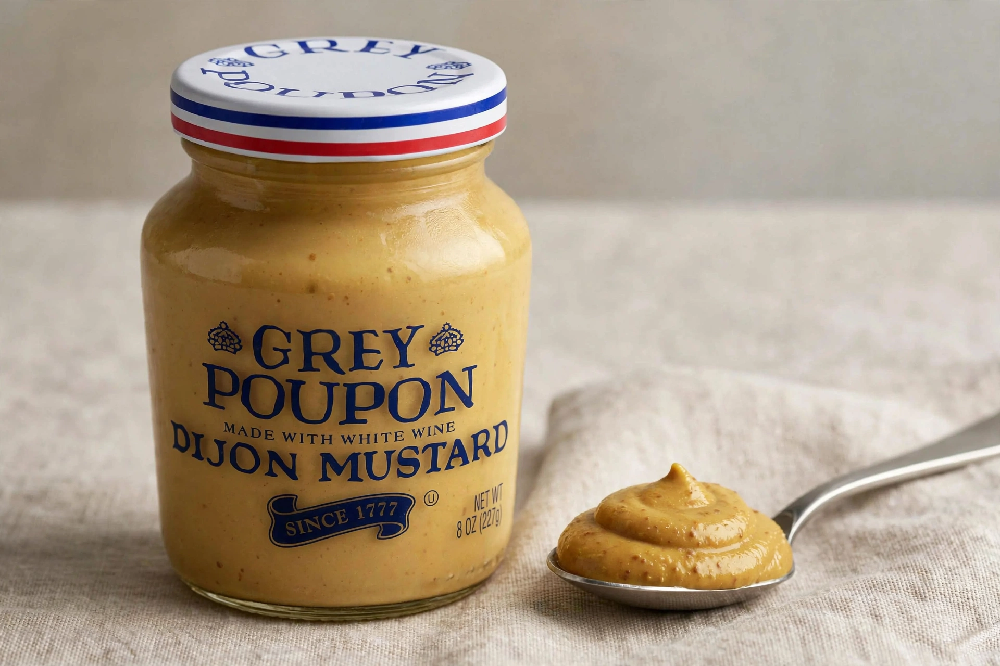

| Grey Poupon | |
 | |
| Product type | Dijon mustard |
|---|---|
| Introduced | 1866, Dijon, France |
| Founders | Maurice Grey and Auguste Poupon |
| Owner | Kraft Heinz (United States); brand lineage via Unilever in Europe |
| Tagline | "Pardon me, would you have any Grey Poupon?" |
Grey Poupon is a brand of Dijon mustard that originated in Dijon, France, and became exceptionally successful in the United States, where it helped transform mustard from a cheap yellow condiment into a premium product. The brand takes its name from its two founders: Maurice Grey, who developed a mustard-making machine and recipe, and Auguste Poupon, who provided financing; their partnership began in 1866.
Maurice Grey, a Dijon mustard maker, won medals for his mustard in the nineteenth century, and in 1860 he developed a machine that greatly increased the speed of mustard production. Backed financially by Auguste Poupon, the firm of Grey-Poupon grew into one of Dijon's celebrated mustard houses. The brand won a gold medal at the 1889 Paris World's Fair (Exposition Universelle).
The American connection dates to the interwar period: rights for the United States were acquired by the Heublein Company, which began marketing Grey Poupon in the U.S. Heublein's positioning of the French mustard as a luxury item — sold in a distinctive jar with a foil seal — proved remarkably successful even at premium prices. Ownership of the U.S. brand passed through a series of food conglomerates (Heublein, then RJR Nabisco, Nabisco, and Kraft) and it is now a Kraft Heinz brand in the United States, manufactured with mustard seed largely from Canada and white wine. The traditional Dijon product historically used verjuice or white wine from the region.
Grey Poupon is famous for its 1981 television commercial, one of the most parodied advertisements in American culture: a chauffeur-driven Rolls-Royce pulls alongside another, and a passenger in one leans out to ask, "Pardon me, would you have any Grey Poupon?" The other passenger produces a jar — "But of course!" The campaign cemented the brand's association with affluence and good taste; the line has been quoted and parodied in films, songs (notably in hip-hop, where "Grey Poupon" became shorthand for luxury), and comedy for decades. The brand revisited the campaign in 2013 with a follow-up advertisement styled as a car chase to recover the borrowed jar.
Sales of Grey Poupon in the United States rose dramatically in the 1970s and 1980s as the brand's prestige positioning and advertising expanded the market for Dijon-style mustard; food historians credit it with introducing many American consumers to European-style mustard and with creating a premium tier in a previously commodity category.
See also: Dijon, Mustard (condiment), Kraft Heinz